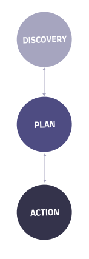

<!-- section how to -->
<section class="how-to mt-40" id="how-to">
	<div class="container-fluid max-element pl-md-5 pr-md-5">
		<div class="row no-gutters">
			<div class="col-lg-12 how-to-title">
				<h1 class="purple fw-500 banner-title">
					Inteligentně, bezpečně a postupnými kroky
				</h1>
			</div>
			<div class="col-lg-5 mt-40">
				<p class="how-block">
					<span class="fw-450">1. Analýza současného stavu</span> - na startu se
					setkáme a zanalyzujeme současný stav firmy/projektu/týmu. Zrevidujeme
					stav Vašeho podnikání, Vaše očekávání, náklady a konkurenci.
				</p>
				<br />
				<p class="how-block">
					<span class="fw-450">2. Vydefinování potřeb</span> - po úvodní analýze
					spolu vydefinujeme potřeby/problémy a možnosti realizace nebo jejich
					odstranění. Součástí je i dlouhodobý strategický plán naplnění cíle,
					cenový a časový odhad.
				</p>
				<br />
				<p class="how-block">
					<span class="fw-450">3. Návrh řešení</span> - vyhotovíme řešení, které
					je možné zrealizovat v daném budgetu. Řešení vždy obsahuje dlouhodobý
					plán v rámci let a možnosti neustálého rozvoje.
				</p>
			</div>
			<div class="col-lg-2">
				
			</div>
			<div class="col-lg-5 mt-40">
				<p class="how-block">
					<span class="fw-450">4. Vydefinování milníku</span> - společné
					vydefinujeme první milník, kterého chceme dosáhnout, včetně
					konkrétních kroků, odpovědností a osob potřebných k jeho naplnění.
				</p>
				<br />
				<p class="how-block">
					<span class="fw-450">5. Společná práce na naplnění cíle</span>
					- práce na naplnění cíle, během níž probíhá pravidelná kontrola
					ve sprintech a validace týmem odpovědným za kontrolu a kvalitu.
					Průběžné menší změny vyplývající z práce se zapracovávají dle potřeby
					projektu.
				</p>
				<br />
				<p class="how-block">
					<span class="fw-450">6. Vyhodnocení úspěšnosti a další rozvoj</span>
					- vyhodnocení výsledného produktu/projektu z pohledu kvality, času,
					ceny a efektivity. Na základě toho se přechází k rozvoji nebo
					následnému vzdělávání dle potřeby projektu.
				</p>
			</div>
		</div>
	</div>
</section>
